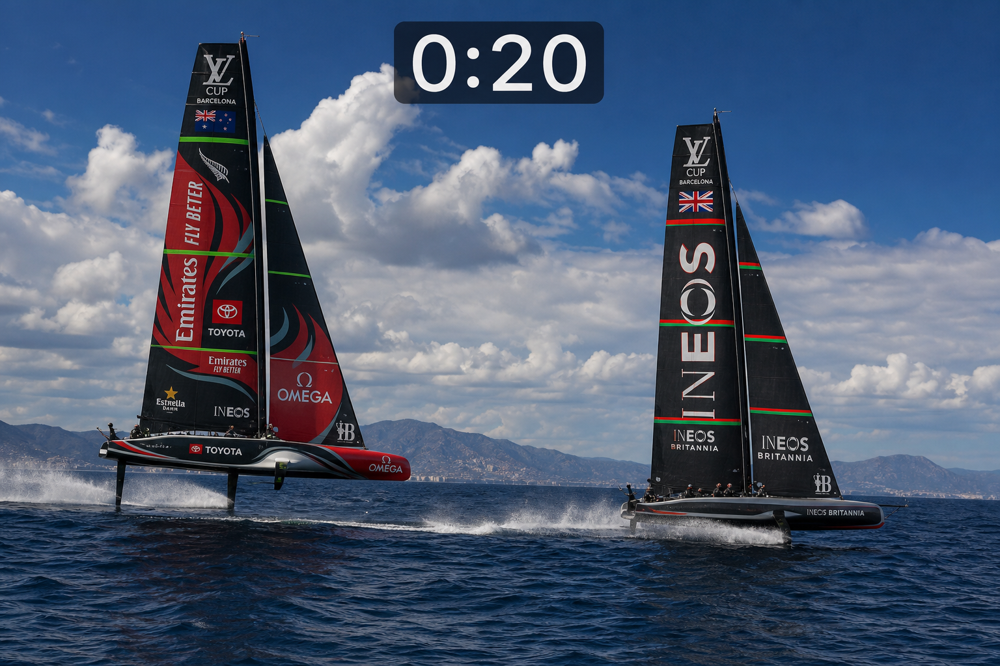
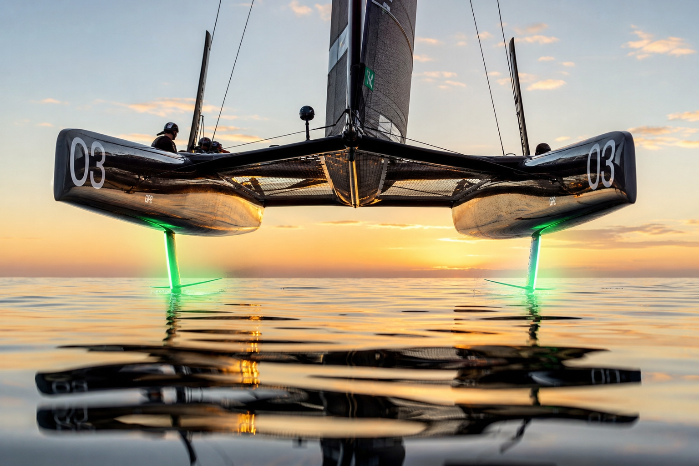
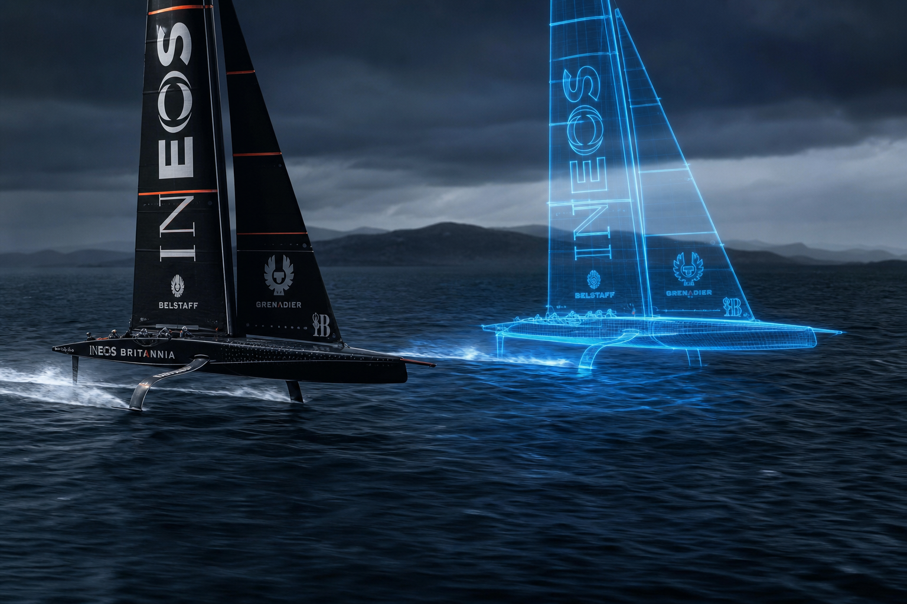
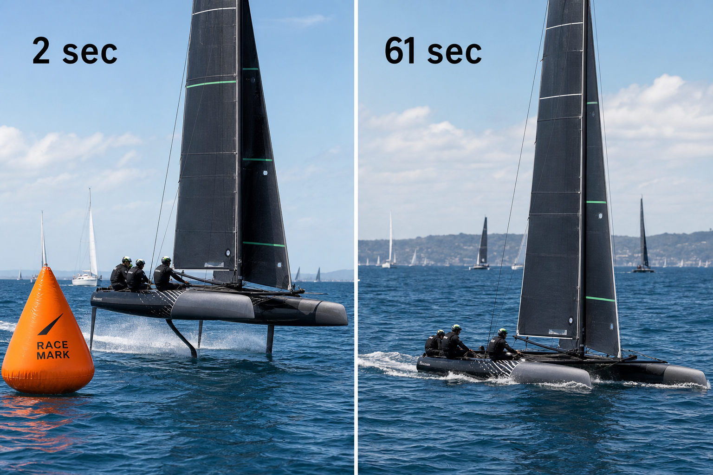
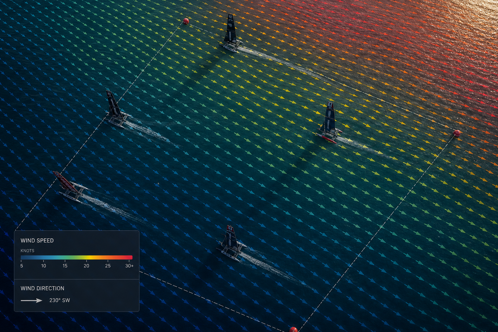

Foil Forward · On the Water
Four experiments, one causal chain. Source: F50 telemetry — Bermuda 2026 (8 races) + Halifax 2024 (6 races).

Within the first 20 seconds, eventual top-4 boats already fly higher and move faster — before tactical choices. 11 of 12 sensor gaps survive wind-speed control (= skill, not luck).
Mean ride height, first 60 s (mm). Higher = cleaner flight.

After removing leg length (74.8% of raw variance), flight quality explains 86.3% of controllable regret residual. Dirty air + VMG efficiency ≈ 14% combined.
Share of residual variance (R² = 0.195).

Each team gets its own ghost path (same polar, their wind). Regret = actual leg time − ghost leg time. Total regret vs finish rank: Spearman ρ = 0.915. Upwind regret 2.2× downwind.
Mean regret (s) by leg type. MWU p ≈ 4×10⁻¹².

ITA loses time after mark roundings — re-establishing flight takes 61 s vs AUS 1.5 s. ~8 min/race self-inflicted. Explains 52.7% of upwind-regret variance (ρ = 0.65).
Seconds until flight quality > 0.7 after leg boundary.

Interactive version: dataExploration/exported/wind_field_interp_Bermuda_Race_5.html
| Term | Meaning |
|---|---|
| Flight quality | 0–1 score from ride height + foiling sensors (AUC 0.978) |
| Ghost boat | Per-team optimal path using fleet polar + that boat's wind |
| Regret | Seconds lost vs ghost over a leg (actual − ghost time) |
| Re-establishment | Seconds until flight quality > 0.7 after a turn |
Exported from race-decided-in-60-seconds.canvas.tsx · Print: Cmd+P → Save as PDF · Enable background graphics
Source: SailGP data